Gridline F1 – צילומי מסך
הצילומים נוצרו על ידי הרצת קוד הממשק האמיתי של הקושחה מול סימולטור תצוגה במחשב (מוגדל פי 2), עם תשובות API אמיתיות של עונת 2023 ושעון מדומה ב‑2023. זה לא צילום של הלוח הפיזי – הגוונים במסך האמיתי יכולים להיות מעט שונים.
לאורך (240×320)


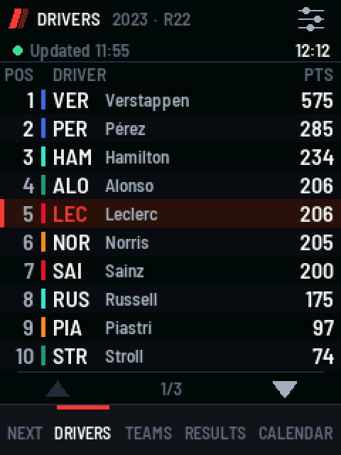
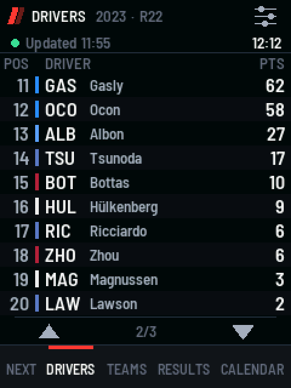

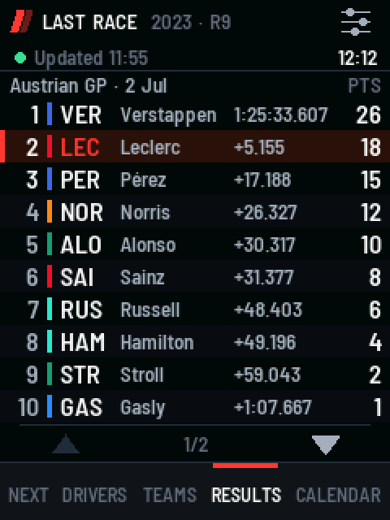
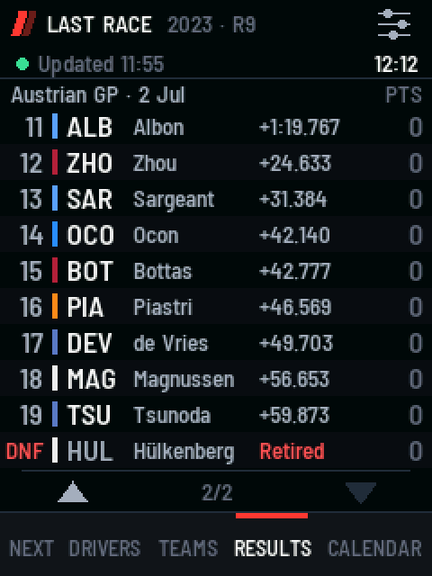

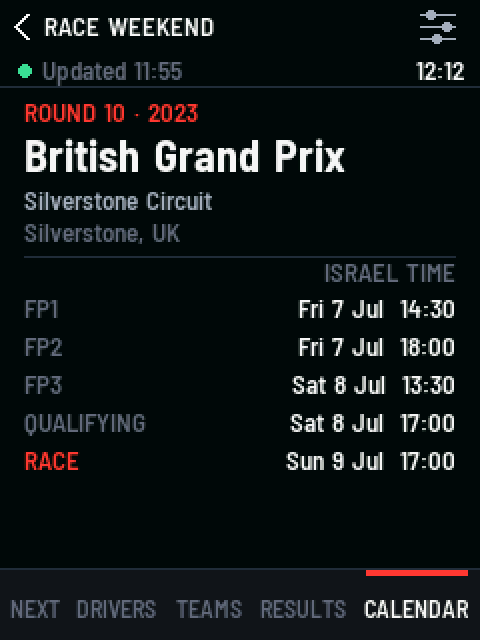
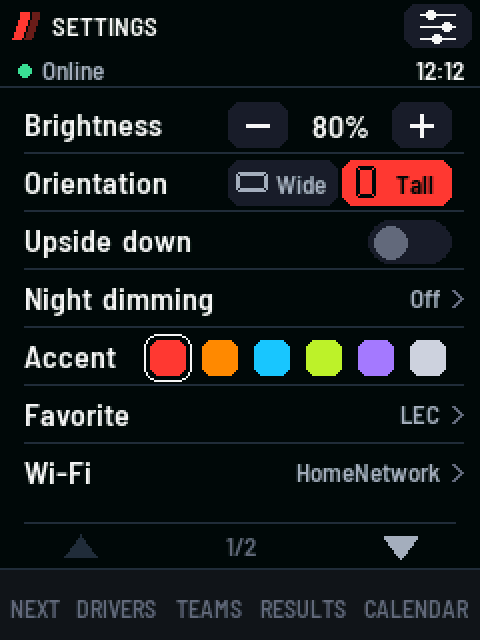
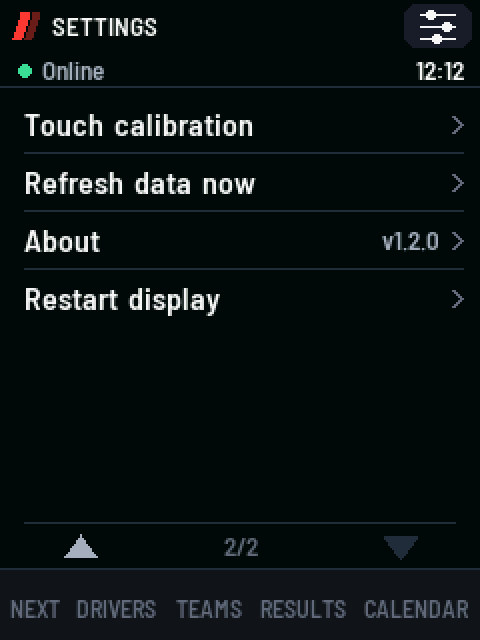

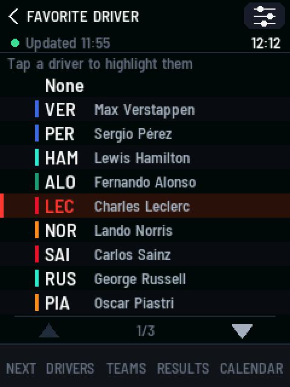

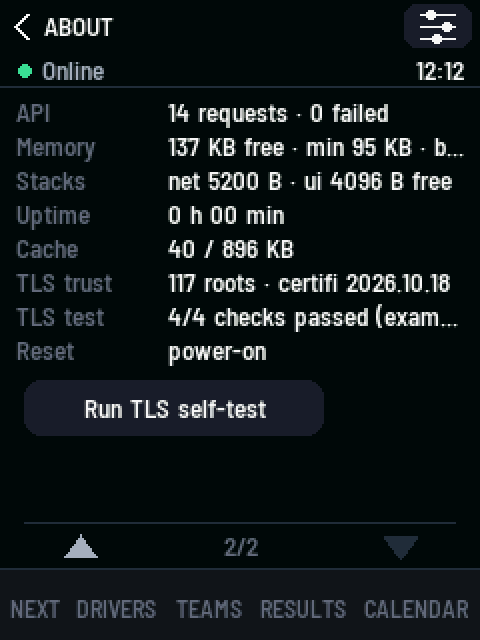
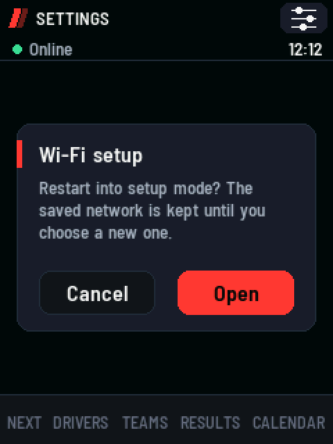
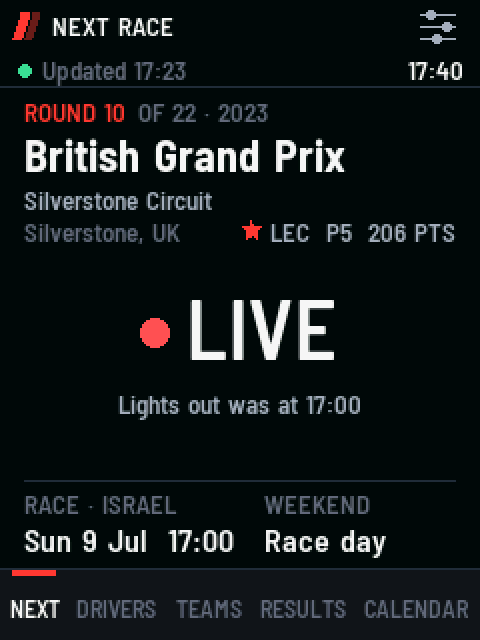
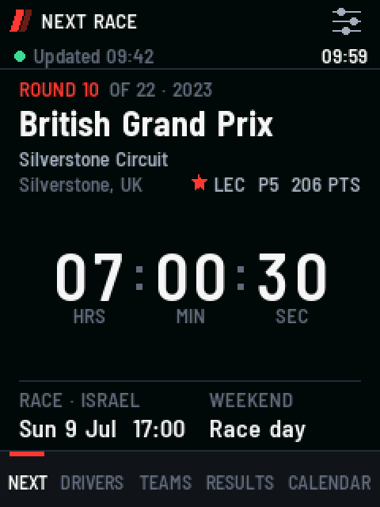


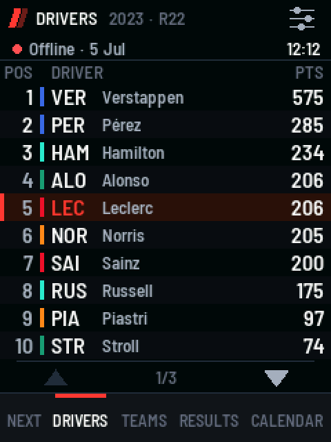
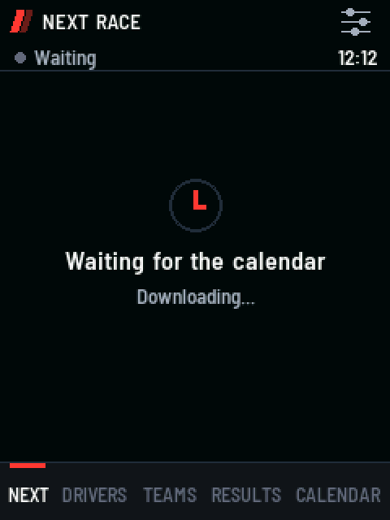

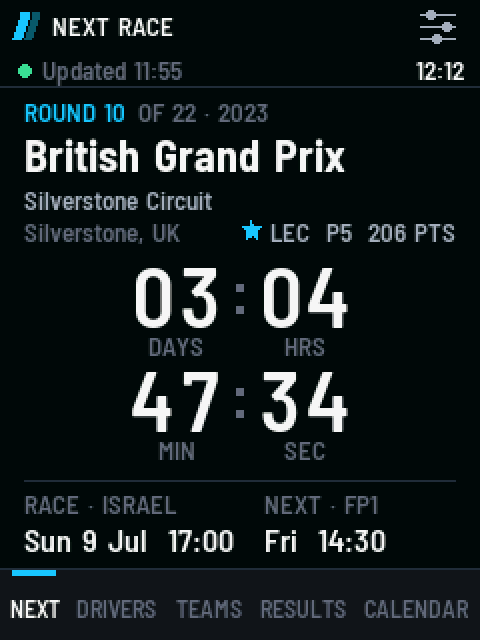

לרוחב (320×240)

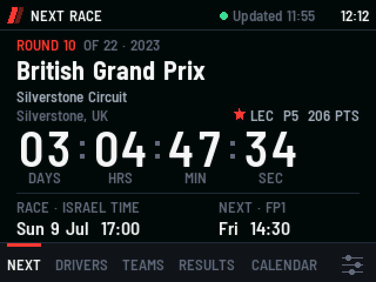
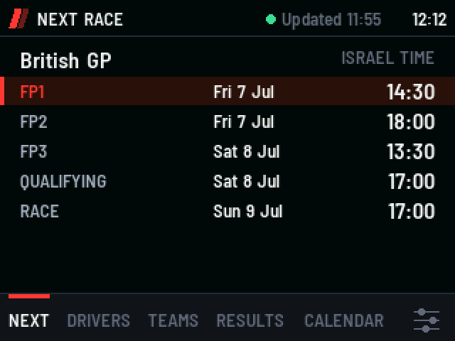

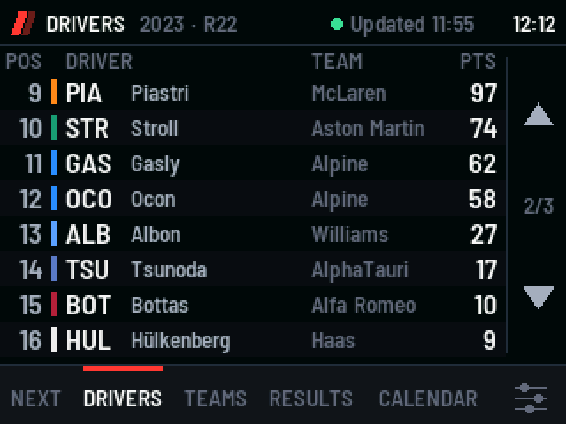
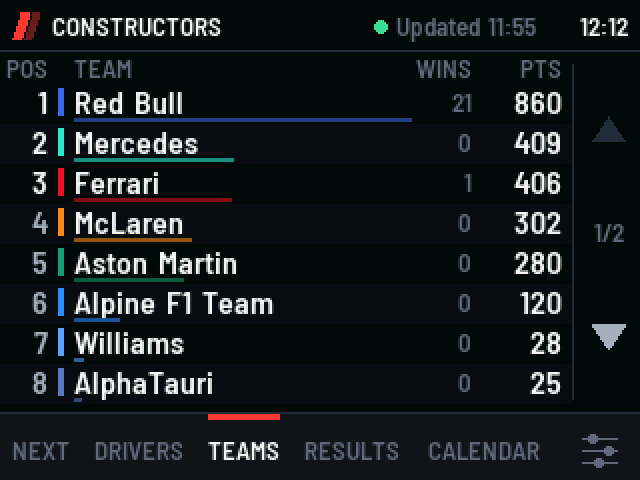

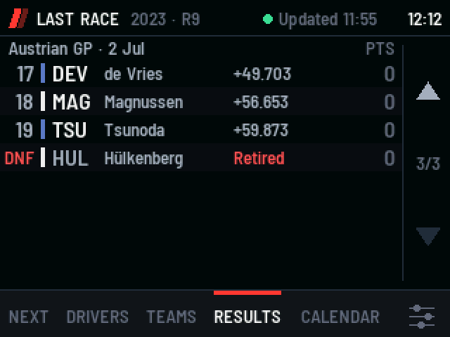
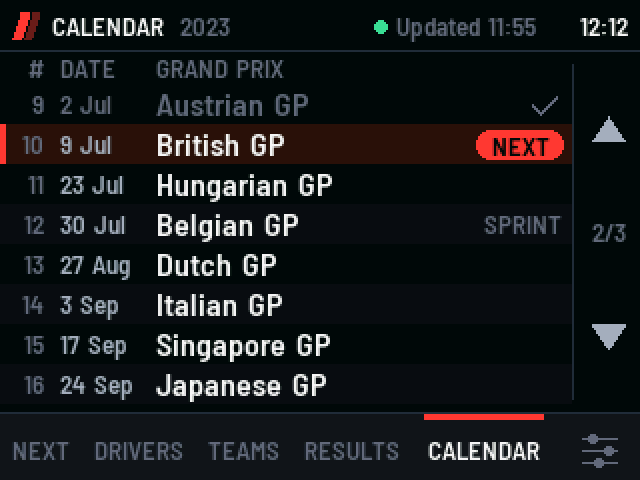

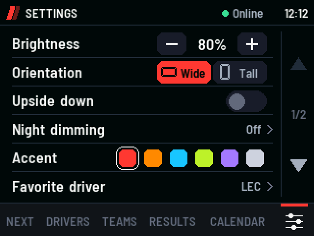


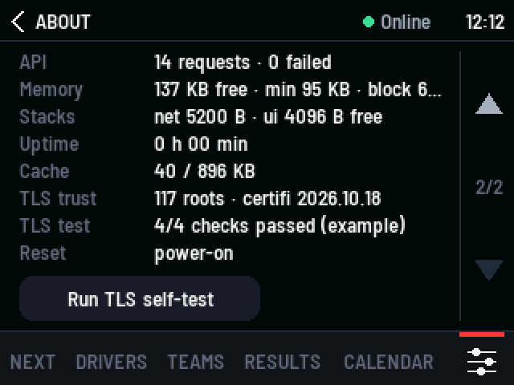


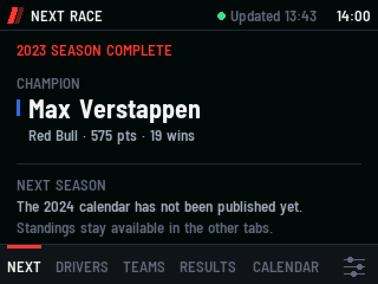

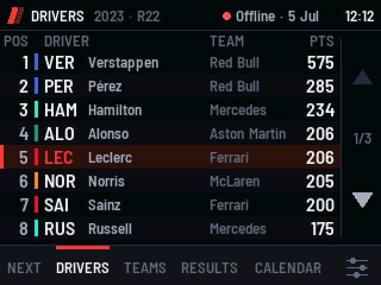


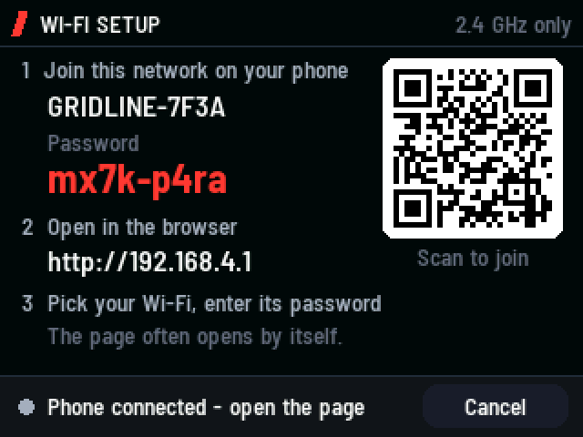